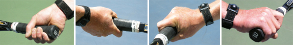

← Bài trước: Understanding The Forehand Grips | 🏠 Classic Lessons Trang chủ | Bài tiếp: → What is Open Stance
Vũ khí hóa cú trái tay một tay
Thư viện kiến thức quần vợt toàn diện — Cơ bản, Phân tích kỹ thuật, Thư viện tham khảo và nhiều hơn nữa
Vũ khí hóa cú trái tay một tay
Bởi Geoff Williams
Vũ khí hóa cú trái tay một tay: một sự kiện thể chất và tinh thần.
Tôi không đánh bất kỳ cú trái tay xoáy cuộn nào trong 12 năm đầu tiên chơi quần vợt. Cha tôi, người chỉ biết chơi một cách sơ sài, cũng chưa bao giờ đánh cú trái tay xoáy cuộn nào trong đời. Khi còn nhỏ, tôi là một người hâm mộ Ken Rosewall. Cha tôi dạy tôi cách đánh cú cắt bóng lúc tôi 10-11 tuổi.
Không có xoáy cuộn cũng không ngăn cản Rosewall giành được 8 giải Grand Slam và vào chung kết US Open khi mới 39 tuổi. Nhưng một ngày nọ, sau khi xem Bjorn Borg đấu với John McEnroe và thấy Big Mac đánh những cú xoáy cuộn một tay, tôi quyết định học cách đánh nó.
Tôi không biết mình đang làm gì, nên chỉ nắm khung vợt bằng cách cầm bằng tay phải. Ngay lập tức, tôi đánh ba quả bóng tiếp theo trực tiếp xuống đất. Cuối cùng, tôi chuyển sang cách cầm "Uni Grip". Điều đó có nghĩa là, thay vì thay đổi cách cầm vợt, tôi lật vợt và đánh bóng bằng cùng một bên dây trên cả hai mặt.

Cách cầm Uni Grip của tôi cho tôi một cách cầm vợt bán phía tây mạnh mẽ trên cả hai mặt trước và sau, cách cầm lý tưởng cho xoáy cuộn nặng. Với sự thay đổi này, tôi chính thức trở thành một tay đánh xoáy cuộn.
Cách cầm Uni Grip hoạt động cả hai chiều.
Tôi quyết định thay đổi cách này một phần để có phản ứng trả giao bóng nhanh hơn. Nhưng tôi cũng cam kết đánh bóng trên mặt sau và trả giao bóng mặt sau. Tốc độ của tôi ngay lập tức cải thiện. Cuối cùng, tôi phát triển khả năng đánh bóng với tốc độ và xoáy cuộn cao.
Một số người cười nhạo cú đánh mới của tôi vì cách cầm vợt không thông thường. Nhưng những người khác sẽ đứng sau hàng rào phía sau tôi và xem cú đánh từ phía sau, sau đó hỏi tôi, "Bạn làm thế nào?"
Kể từ khi thay đổi cách đánh cách đây 30 năm, cú trái tay xoáy cuộn tấn công của tôi đã trở thành cú đánh tốt nhất của tôi. Tôi đã từ một cú cắt bóng vô thức mà bất kỳ ai cũng có thể đập, trở thành một cú trái tay với tốc độ thực và xoáy cuộn nặng.
Bây giờ, tôi không bao giờ cắt bóng trả giao bóng trái tay và tôi không cắt nhiều, ngoại trừ khi tôi muốn giữ bóng thấp và xa. Cú đánh của tôi không phải là một cú đánh bảo thủ, và nó trái ngược với những gì nhiều huấn luyện viên dạy. Nó chắc chắn không trông giống như của Johnny Mac.
Tôi không bao giờ cắt bóng trả giao bóng trái tay.
Nhưng tôi có thể thấy rằng ít tay vợt hơn giờ đây có thể đánh bại tôi khi tấn công mặt sau của tôi. Và đó nói chung vẫn là chiến lược phổ biến nhất, tấn công mặt sau, đặc biệt là khi đối mặt với một tay đánh một tay.
Không ai thực sự có một trò chơi hoàn chỉnh ở cấp độ 4.0 đến 5.0 của tôi, đặc biệt là ở các công viên công cộng và các giải đấu nhỏ mà tôi chơi. Khi tôi gặp một tay vợt cố gắng tấn công mặt sau của tôi, tôi bắt đầu nghe một tiếng nói. Và tiếng nói nói: "Điểm này đã kết thúc rồi."
Và thường thì nó đúng. Khi tiếng nói nói, tôi thư giãn và trở nên tự tin cao độ. Tôi sẽ mở sân, đưa đối thủ chạy, và tạo ra một cú đánh yếu để dễ dàng đánh bại.
Khi trái tay của tôi trở nên mạnh mẽ hơn, tôi bắt đầu nghe một tiếng nói.
Mục tiêu của tôi là xây dựng các điểm để tôi có thể đập trái tay. Đánh bại đối thủ ở phía xa, nhận trả giao bóng yếu, và đánh bại những cú đánh yếu kém của họ.
Tôi đã phát triển một thái độ và tin rằng "Tôi sẽ giết cú đánh này". Không có gì bằng cảm giác tuyệt vời khi hoàn toàn nắm được một cú trái tay xoáy cuộn nặng thắng. Và đó là điều tôi hy vọng bạn sẽ có thể làm sau khi đọc bài viết này. Hoàn toàn nắm được cú đánh một tay của bạn, không chỉ trên các quả bóng dễ đánh, mà còn trên trả giao bóng, để trái tay của bạn trở thành một nguồn vui vẻ tuyệt vời.
Nắm được cú đánh một tay: một nguồn vui vẻ cá nhân tuyệt vời.
Nhưng học cách làm tất cả những điều này mà không có huấn luyện viên hoặc người hướng dẫn đã cảm thấy như một hành trình bất khả thi vào một số thời điểm. Trong bài viết này, tôi muốn rút ngắn hành trình đó cho bất kỳ ai quan tâm đến việc học cách làm điều tương tự. Tuy nhiên, bạn sẽ thấy rằng cú đánh mà tôi tạo ra là không thông thường ở nhiều cách.
Tạo xoáy cuộn
Tôi tin rằng chìa khóa cơ bản để vũ khí hóa cú trái tay xoáy cuộn của bạn là xoay thân, cụ thể là xoay hông. Mục tiêu là xoay hông của bạn dữ dội vào cú đánh.
Xoáy cuộn này là nguồn cung cấp tốc độ vợt dẫn đến tốc độ và xoáy cuộn. Bạn muốn đánh bóng với tốc độ chứ không phải là vừa phải, đánh trong tấn công chứ không phải trong phòng thủ.
Vậy, hãy xem cách thiết lập xoáy hông này bằng cách xem chuẩn bị, bao gồm xoay thân đồng bộ và bộ chân di chuyển.
Điểm đầu tiên khiến cú đánh này không thông thường là vị trí của bàn tay. Không giống như hầu hết các cú đánh một tay khác, tôi giữ bàn tay không chủ đạo ở trên tay cầm.
Điều này tương tự như cách hầu hết các tay vợt đánh hai tay cầm vợt. Nhưng nó không giống như bất kỳ huấn luyện viên nào sẽ dạy hiện nay.
Bạn đã bao giờ thấy một cầu thủ bóng chày với bàn tay đánh bóng tách biệt ở giữa của vợt chưa? Chỉ khi anh ta đánh bóng. Và đó là những gì quá nhiều tay vợt đánh một tay đang làm, đánh bóng.
Chìa khóa để vũ khí hóa: xoáy hông dữ dội.
Tôi tin rằng tay vợt đánh một tay đang hạn chế xoáy của mình với vị trí bàn tay. Tay vợt đánh hai tay có lợi thế hơn tay vợt đánh một tay trên các quả bóng cao và khi trả giao bóng kick serve vì bàn tay không chủ đạo không hạn chế xoáy hoàn chỉnh của họ.
Tôi đã tích hợp cùng một lợi thế này vào cú đánh một tay của mình. Với cả hai bàn tay gần nhau trên tay cầm, cánh tay không chủ đạo không hạn chế việc quay lại.
Điều này cho phép tôi tạo ra một xoáy nhanh hơn, lớn hơn. Xoáy tăng thêm này sau đó được giải phóng với xoáy hông. Đây là điều tạo ra tốc độ kết hợp với xoáy cuộn, hai đặc điểm của quả bóng nặng.
Tôi tăng xoáy nhiều hơn như một tay vợt đánh hai tay với bàn tay gần nhau.
Xoáy tinh thần
Xoáy trên mặt sau không chỉ là về thể chất. Còn có cái gọi là "xoáy tinh thần". Sự quyết tâm đánh một quả bóng có tốc độ cao hoặc một quả bóng xoáy cuộn rpm cao cũng là một điều tinh thần.
Có sự quyết tâm tinh thần đó cũng quan trọng như xoáy thể chất. Một tâm trí lỏng lẻo, thụ động sẽ không bao giờ tạo ra một cú trái tay vũ khí hóa. Đừng nhầm lẫn sự thư giãn với sự thụ động!
Có một cách để thư giãn trong khi sẵn sàng đánh. Xoáy là sự kết hợp giữa căng thẳng và thư giãn. Học cách chờ đợi trong xoáy như một con rắn, sẵn sàng về mặt thể chất và tinh thần để đánh với toàn bộ sức lực khi mục tiêu đến.
Giải phóng xoáy
Bây giờ hãy xem kỹ xem điều gì xảy ra trong pha đánh bóng. Quan sát rằng hông trước mở đầu tiên. Quan sát cách cánh tay và vợt kéo một chút phía sau. Đây là sự chậm trễ tương tự như Brian Gordon đã tìm thấy trên cú thuận tay ATP (Nhấp vào đây.)
Sự chậm trễ giữa việc bắt đầu xoáy và việc di chuyển thực sự của cánh tay và vợt là điều tạo ra tốc độ và xoáy cuộn dữ dội.
Hông của tôi mở ra trước, giống như ném một đĩa bay, hoặc một đòn chém karate. Sau đó là một pha vung vợt theo đà hoàn chỉnh và tiếp tục quay lại và sang phải.
Bất kỳ cú đánh trái tay nào cũng bị cấm bởi các quy tắc Queensbury trong môn đấm bốc. Nó quá mạnh để cho phép trong đấm bốc, nhưng được phép trong võ thuật. Và trong quần vợt.
(Cách thực hiện một đòn chém karate https://www.youtube.com/watch?v=WRHmf65Rdgw
Cách thực hiện một cú đánh trái tay https://www.youtube.com/watch?v=Gm0SyEqc7ns )
Hông mở trước khi vợt quay lại.
Thanh cánh tay
Một chìa khóa để làm cho xoáy hông hoạt động trong một cú trái tay vũ khí là hình dạng và sự sắp xếp của cánh tay đánh bóng. Tôi gọi điều này là "thanh cánh tay".
"Thanh cánh tay", giống như một thanh 2x4 tại điểm tiếp xúc, thẳng tại khuỷu tay.
Tại điểm tiếp xúc, cánh tay được "thanh" giống như một thanh 2x4, với khuỷu tay nằm trên toàn bộ cánh tay. Nếu khuỷu tay uốn, không có nhiều lực được áp dụng vào cú đánh.
Một khuỷu tay uốn có nghĩa là đường đi đến điểm tiếp xúc ngắn hơn và điểm tiếp xúc mềm hơn. Với xoáy hông dữ dội này, điều này có thể có nghĩa là tiếp xúc muộn và là cái hôn chết trong việc tạo ra một quả bóng nặng và độ chính xác của cú đánh.
Cổ tay được giữ khóa lại phía sau trong suốt quá trình đánh bóng. Bởi vì vị trí khóa lại phía sau của nó, nó áp dụng lực vững chắc tại điểm tiếp xúc.
Điểm tiếp xúc
Xem video của Andre Agassi đã dạy tôi không bao giờ để bóng chơi tôi. Agassi luôn bảo vệ điểm tiếp xúc của mình ở phía trước, và tôi cũng học được điều đó một cách trực giác.
Điểm tiếp xúc trên cú trái tay của tôi nằm xa hơn nhiều so với những gì các huấn luyện viên dạy—thậm chí có thể xa đến một chiều rộng vai. Một số huấn luyện viên dạy sai điểm tiếp xúc ngay với chân đánh bóng, vì đó là nơi điểm tiếp xúc nằm cho cú thuận tay.
Với cú trái tay xoáy cuộn Uni Grip, một cú đánh đánh ngay với chân trước là một cú đánh đánh xa đến một chiều rộng vai. Điểm tiếp xúc muộn này cũng tước đi khoảng một chiều rộng vai của gia tốc.
Bảo vệ điểm tiếp xúc của bạn có nghĩa là giữ tất cả các cú đánh ở phía trước cơ thể của bạn, bất kể tốc độ/spin/chiều cao của cú đánh đến. Bạn chờ bóng đến khu vực đánh bóng của mình và sau đó xoay vào cú đánh của mình!
Điều này được tính toán bên trong cơ thể của bạn và không có gì liên quan đến độ cao của bóng hoặc độ sâu của nó. Nó có mọi thứ liên quan đến khoảng cách của bóng từ điểm tiếp xúc đúng của bạn. Nếu bạn không đánh ở phía trước trên quả bóng xoáy cuộn, tốc độ vợt sẽ giảm mạnh tại điểm tiếp xúc.
Hầu hết tốc độ vợt trong các cú đánh chuyên nghiệp được phát triển trong phần cuối cùng của pha đánh bóng trước khi tiếp xúc. Đó là lý do tại sao việc bảo vệ điểm tiếp xúc rất quan trọng.
Luôn bảo vệ điểm tiếp xúc của bạn.
Nếu điểm tiếp xúc muộn, gia tốc sẽ bị cắt đứt. Phong cách đánh trái tay tấn công này có thể được so sánh với một con rắn cự tuyệt vời, giải phóng và đánh với toàn bộ sức lực, một khoảnh khắc gia tốc thuần túy.
Bộ chân di chuyển
Bây giờ hãy xem cách chúng ta thiết lập xoáy và xoay khi có sự di chuyển của bóng, như hầu như luôn luôn có trong thi đấu. Đây là mẫu bộ chân di chuyển cơ bản.
Nó bắt đầu bằng một bước tách. Sau đó là một xoay thân đồng bộ. Lưu ý rằng tôi đang thực hiện bước tách nâng cao, trong đó chân trái của tôi đã xoay theo hướng của cú đánh vào lúc hạ cánh. Tiếp theo là các bước chéo đến bóng.
Điều này được theo sau bởi cái gọi là bước đặt. Đây là cách thiết lập trên chân sau trái. Nó tương ứng với lượng xoáy tối đa với hông.
Tiếp theo, tôi thực hiện cái gọi là bước đánh, chuyển trọng lượng sang chân trước. Bước này thường là một bước chéo vào thế đứng đóng. Nhưng khi tôi gần giữa sân, bước có thể là trung tính, trực tiếp về phía trước.
Bước tách, xoay thân đồng bộ, bước chéo, bước đặt, bước đánh.
Đánh xuống
Điều này được theo sau bởi cái gọi là Bước Phục hồi Đánh xuống. Tôi bước ra khỏi bước đánh với một bước phục hồi đánh xuống trong đó chân sau trái khi quay lại và đánh xuống cứng rắn trên sân. Tôi sau đó đẩy ra và lùi lại thay vì bước chéo nếu tôi có khoảng cách đáng kể để phục hồi.
Bạn đã bao giờ xem các cầu thủ phòng ngự góc di chuyển về phía sau trong việc bảo vệ chưa? Họ không sử dụng bước chéo—đó quá chậm. Thay vào đó, họ lùi lại. Mẫu này rất hiệu quả trong quần vợt đặc biệt nếu bạn đang di chuyển về phía sau.
Bước Phục hồi Đánh xuống theo sau bởi việc lùi lại.
Lỗi phổ biến
Lỗi phổ biến nhất là không xoáy. Không lấy khung về phía sau với cánh tay không chủ đạo hoặc để bàn tay không chủ đạo ở cổ tại bước quay lại. Không xoáy vai sau, không sắp xếp hông với đường hào đôi, không đóng thế đứng với bước đánh tấn công. Tất cả điều này dẫn đến một thế đánh bóng quá mở và do đó không có sức mạnh.
Hông song song với đường hào đôi hoặc thậm chí đóng hơn. Chân đặt hướng về phía hàng rào phía sau. Vai phải xoáy về phía sau, và khung phải đạt xa quanh cơ thể.
Thế đứng phải đóng khi có thể để có sức mạnh thực sự. Bước chéo là điều làm cho có thể tối đa hóa xoáy hông.
Thế đứng đóng là quan trọng cho xoáy hông và sức mạnh.
Nâng
Lỗi phổ biến thứ hai là nâng. Nâng chân đánh bóng lên tại điểm tiếp xúc khiến bạn rời khỏi mặt đất và gián đoạn việc chuyển trọng lượng. Bạn phải giữ chân đất để đánh những cú trái tay mạnh mẽ nhất và có được gia tốc mạnh mẽ từ mặt đất trong bộ chân di chuyển được tính toán.
Nếu bạn đẩy lên khỏi chân đặt quá sớm, nó thẳng đứng chân trước, nâng vai trước lên và cổ, gửi bóng dài, và lấy đi trọng lượng đặt, và di chuyển đầu, vai, và khung lên quá sớm trước khi điểm tiếp xúc của bóng.
Tất cả điều đó đều tốt nếu quả bóng đã được đánh và trọng lượng đã được chuyển đúng cách. Nó không phải là không thể đánh những cú đánh tuyệt vời bằng cách nâng lên quá sớm, nhưng nó khó hơn nhiều.
Một điều đơn giản để tập trung là giữ cổ ổn định và thẳng. Khi bạn giữ chân đất, với đầu gối uốn, trọng lượng xuống, vai và hông "kéo" khung, đường đi mở để nắm được cú đánh.
Sợ hãi
Chơi trong sợ hãi là một vấn đề phổ biến khác. Chơi không sợ hãi là cách duy nhất để đạt được gia tốc tối đa vào bất kỳ cú đánh quần vợt nào. Có các bước có ý thức mà bạn thực hiện để giữ sợ hãi ra khỏi cơ thể của mình. Giữ cơ thể thẳng. Giữ chân và toàn bộ phần dưới của cơ thể di chuyển nhanh vào cú đánh.
Chân nhanh và cơ thể trên lỏng lẻo/luôn luôn di chuyển sẽ cũng làm cho xoáy thân đồng bộ của bạn nhanh hơn. Thư giãn vai và cánh tay và bàn tay sau điểm tiếp xúc và giữ chân nhanh khi phục hồi và di chuyển đến bước đặt tiếp theo. Đây là "khỉ say rượu" hoặc khỉ không sợ hãi cho cơ thể trên, và tốc độ samurai cho phần dưới cơ thể.
Chơi không sợ hãi bằng với gia tốc tối đa.
Rút gọn
Rút gọn pha vung vợt theo đà là một lỗi phổ biến khác. Điều này dẫn đến một cú đánh bị cắt ngắn. Dừng pha vung vợt theo đà sẽ dẫn đến một cú đánh yếu hơn, ngắn hơn, vì bạn đang cắt giảm toàn bộ tiềm năng động học của pha đánh bóng.
Thái độ thụ động
Nếu bạn không tin rằng trái tay của mình là một vũ khí, điều này có thể dẫn đến một thái độ thi đấu thụ động. Nó cũng dẫn đến một thói quen luyện tập thụ động, nơi bạn chỉ đơn giản giữ bóng trong chơi trong chế độ "làm dịu".
Điều này khiến những cú đánh của chính bạn nằm lên dễ dàng để đánh bởi đối thủ của bạn. Nếu bạn không tấn công cú đánh trong luyện tập với một cú đánh đầy đủ, mạnh mẽ và gia tốc, bạn chắc chắn sẽ không thể làm được trong một trận đấu.
Không Bảo vệ Điểm tiếp xúc
Không bảo vệ điểm tiếp xúc, tức là không chờ bóng đến điểm đánh tối ưu của nó để đánh, sẽ làm cho bạn mất khả năng đánh. Không kể chiều cao, điểm tiếp xúc nên xảy ra ở phía trước điểm mà cánh tay của bạn hình thành "thanh cánh tay" với khuỷu tay khóa. Người bảo vệ tốt nhất điểm tiếp xúc là người tấn công tốt nhất.
Cố gắng giết
Vấn đề đối lập là cố gắng giết mọi quả bóng. Mặc dù bạn đang tìm cách đánh và tạo ra những cú đánh thắng mạnh mẽ khi có thể, nhưng ngay cả những tay vợt tốt nhất cũng có một "chế độ làm dịu".
Người bảo vệ tốt nhất là người tấn công tốt nhất.
Trong chế độ làm dịu, họ chỉ đơn giản giữ bóng trong chơi. Ngoài ra, họ còn có một chế độ trung bình, được thiết kế để điều khiển đối thủ và giữ anh ta chạy.
Nhiều cú đánh trong thi đấu được đánh trong những chế độ này, tùy thuộc vào đối thủ. Bạn cần học cách đánh những quả bóng nào để giết khi bạn đang kiểm soát và có cơ hội. Ngoại lệ duy nhất là khi chính bạn đang ở phòng thủ và nhận ra rằng chỉ có một cú đánh rất mạnh mẽ hoặc một cú đánh thắng có thể đảo ngược tình hình của bạn.
Không Điều chỉnh
Quá nhiều tay vợt không điều chỉnh theo độ sâu hoặc chiều cao hoặc thay đổi xoáy cuộn. Quả bóng ngắn thấp gọi cho các bước nhỏ nhanh, giống như người thầy của các bước nhỏ: Jimmy Connors.
Lưu ý rằng cách tôi bắt đầu di chuyển về phía trước với một bước rơi nhỏ. Những quả bóng này cũng gọi cho đầu gối uốn và đảm bảo bạn đi dưới bóng với giường dây.
Quả bóng sâu hơn, cao hơn gọi cho một điểm bắt đầu cao hơn với bàn tay không chủ đạo và một đường đi xoáy cao hơn. Xoáy thân đồng bộ thường bị bỏ qua trong cả hai trường hợp này. Sắp xếp bàn tay không chủ đạo của bạn ở cùng chiều cao với quả bóng đến. Vì vậy, trên những quả bóng cao hơn và thấp hơn, hãy chờ bóng đến gần bạn một chút lâu hơn để có được "thanh cánh tay" đúng.
Một quả bóng ngắn: bước rơi, bước di chuyển nhỏ hơn, uốn đầu gối tuyệt vời.
Xoáy thân đồng bộ, bộ chân di chuyển, xoáy, thanh cánh tay, và hông mở ra nhanh, tất cả đều kết hợp lại khi bóng đến điểm đúng. Thường có một cảm giác "chờ đợi" để điều này xảy ra, nhưng một cách lỏng lẻo, nhanh chóng.
Bạn càng nhanh đến điểm mà bạn sẵn sàng đánh từ một xoáy lớn, bạn càng có thể đánh một cú đánh tốt hơn. Đó là lý do tại sao những tay vợt tốt nhất luôn có vẻ như luôn có rất nhiều thời gian. Và trong những tình huống khẩn cấp, họ đã quen với việc giải phóng xoáy rất nhanh, vì vậy họ có thể xử lý nó tốt hơn.
Vậy, có một số điểm không thông thường ở đây về vũ khí hóa cú đánh một tay của bạn. Nhưng cách duy nhất để đánh giá chúng cho trò chơi của bạn là thử nghiệm và đưa những nguyên tắc mới này vào thực hành. Tôi thực sự hy vọng rằng bạn sẽ làm như vậy—và nếu bạn làm, tôi hy vọng bạn sẽ thích cú trái tay mạnh mẽ mới của mình!

Geoff Williams lớn lên chơi quần vợt ở thành phố Richmond, California, giành chiến thắng tại giải đấu thiếu niên đầu tiên và duy nhất khi mới 11 tuổi. Trong suốt những năm sau, anh trở thành một nhân vật nổi bật trên sân chơi giải đấu NTRP ở Northern California, giành nhiều danh hiệu ở cả cấp độ 4.5 và 5.0. Anh đạt được thành tích này với phong cách tự học, từ chối nhận bài học từ huấn luyện viên. Sự trở lại thành công gần đây của anh được truyền cảm hứng một phần từ việc nghiên cứu kỹ lưỡng của Tennisplayer.net.
Anh tuyên bố với vẻ mặt thẳng thắn rằng anh đã đọc tất cả các bài viết trên trang web này. Là một điện công nghiệp theo nghề, Geoff sống ở East Bay cùng vợ Ronda. Muốn trao đổi câu chuyện với Geoff hoặc thảo luận về Gear Head? Hãy gửi email cho anh: bestelectrician@sbcglobal.net
Nguồn: tennisplayer.net lưu trữ — Weaponize Your One Handed Backhand.docx (Thư viện giảng dạy của John Yandell, 2002-2022). Đã được trích xuất và chuyển đổi sang HTML cho Tennis Future Lab.